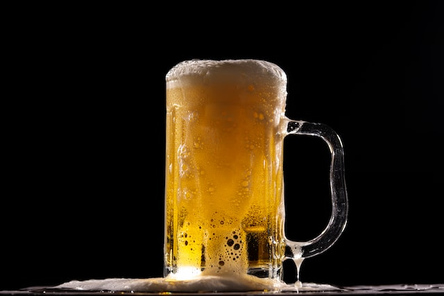

Photo by engin akyurt on Unsplash
Description
The drink of the Gods.
5 gallon recipe.
Ingredients
- 8-10 lbs pure raw honey
- 4-5 gallones purified spring water
- 3 teaspoons yeast nutrient
- 1 teaspoon acid blend (malic/citric acid)
- 5-7 ounces sliced fresh ginger root
- 1/4 teaspoon fresh rosemary (optional, as desired)
- 5-6 whole cloves (optional, as desired)
- 1-2 vanilla beans (optional, as desired)
- Cinnamon/nutmeg (optional, as desired)
- Lime/orange peels (optional, as desired)
- Crushed fruit (peaches, strawberries, grapes, etc.)
- 1 teaspoon Irish Moss (to clarify mead)
- 1/2 teaspoon clear gelatin (to clarify mead)
- 1 packet yeast (champagne or ale yeast)
Steps
- Heat spring water 10-15 minutes until boiling.
- Stir in honey, yeast nutrient, acid blend, and desired herbs/spices.
- Boil for another 10-15 minutes, skimming off foam as needed.
- Add Irish Moss or clear gelatin to clarify.
- Turn off heat, add crushed fruit, and let steep for 15-30 minutes.
- After mead begins to clear, pour through strainer funnel into 5 gallon glass carboy jug.
- Let cool to room temperature for about 24 hours.
- Warm 1 cup of mead in microwave.
- Stir in 1 packet champagne or ale yeast to warm mead, and let sit for 5-15 minutes.
- Add this mead/yeast mixture back into the carboy jug and swirl around to aerate.
- Place run-off tube in stopper of bottle, with other end of tube in a large bowl to capture froth.
- Let mead sit undisturbed for 7 days in a cool, dark area.
- Siphon off mead into clean sterilized jug, leaving all sediment in bottom of original jug.
- Attach airlock to the new jug.
- After 4-6 months, mead will clear.
- Repeat steps 13 and 14 if sediment forms on bottom of jug.
- Stir in 1/2 to 1 lb raw honey (by first dissolving honey with small amound of mead in microwave).
Return to top
Return to home page